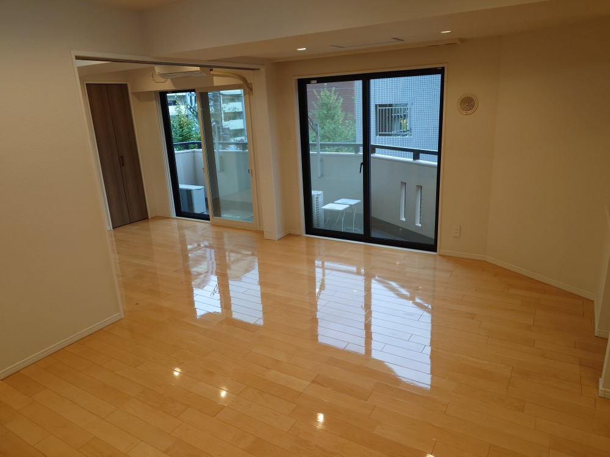
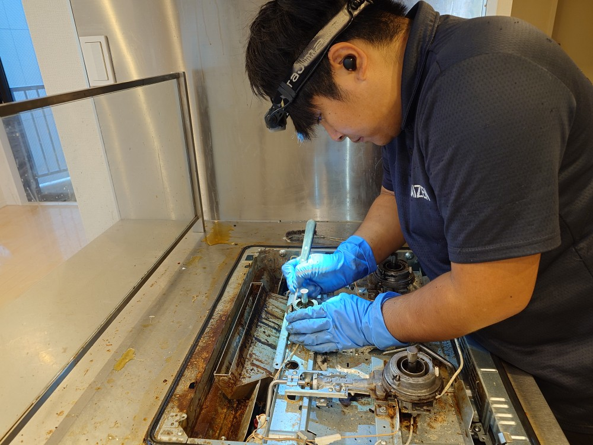
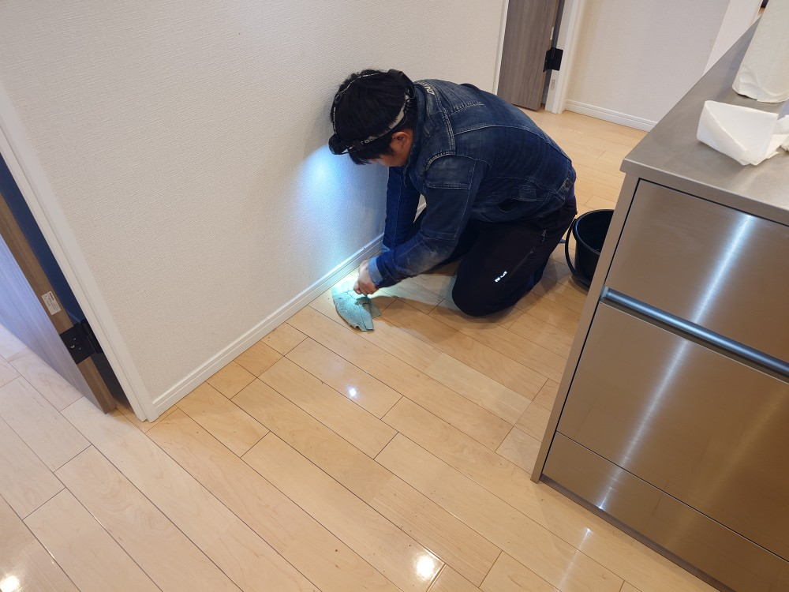
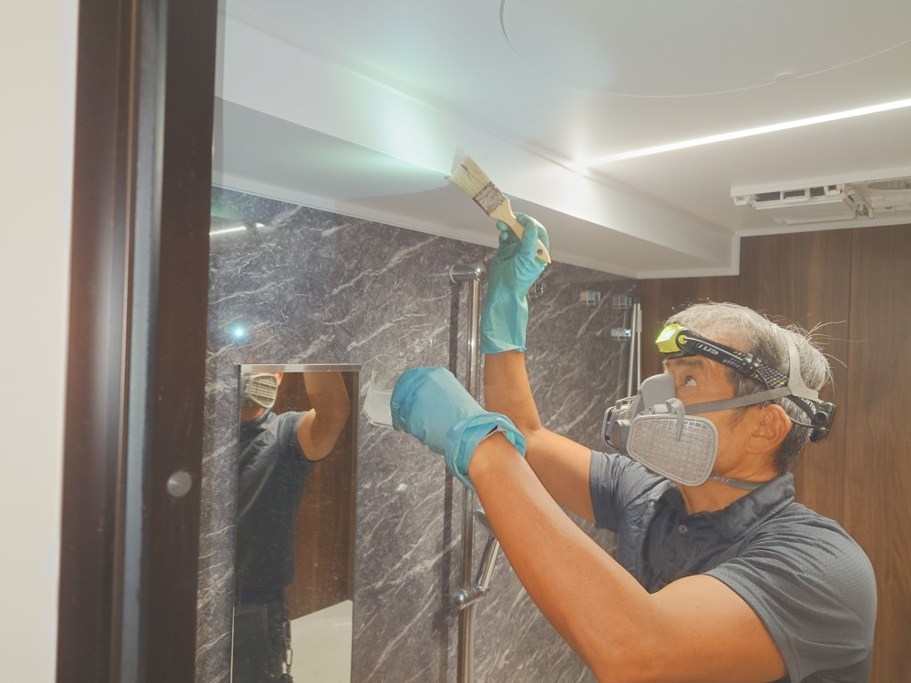
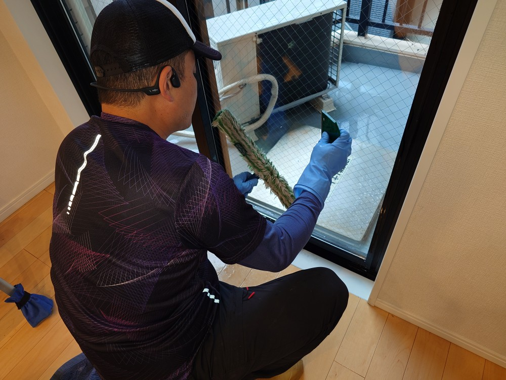
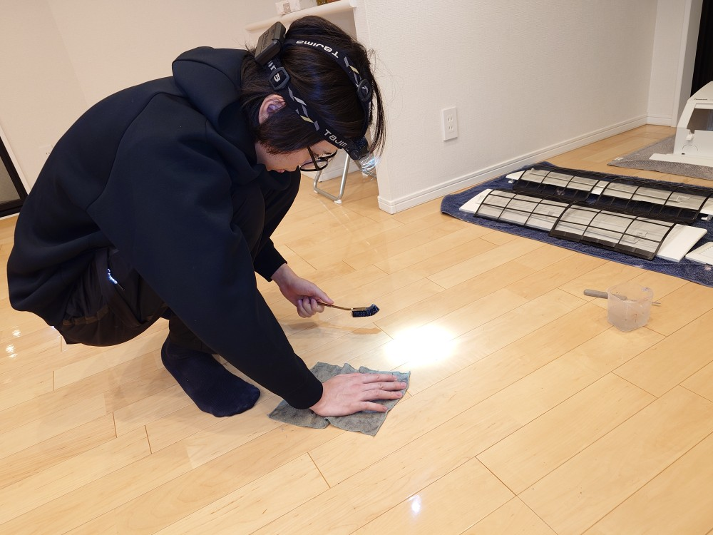
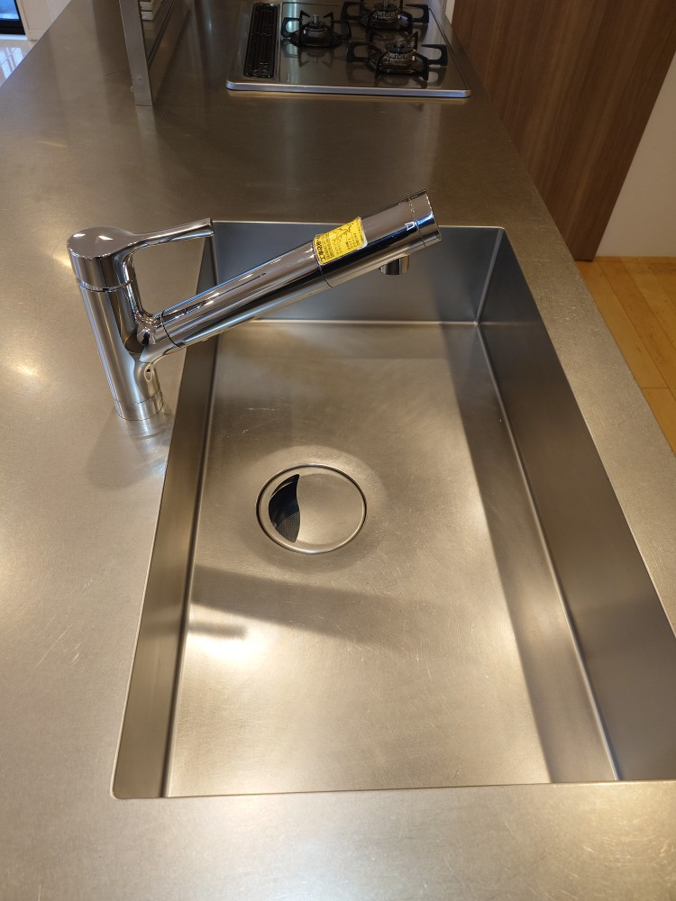

新宿区百人町M様ご新居マンションの入居前空室プロフェッショナルクリーニングをしました!

百人町のM様ご新居の入居前空室プロフェッショナルクリーニングを実施しました!M様のご新居はとても綺麗な床面と、美しい調度品、キッチンで構成されております。空室プロフェッショナルクリーニングでは、まずキッチン換気扇に堆積した油汚れを、フルセット分解洗浄クリーニングを実施して徹底的に磨き上げました。このキッチンクリーニングだけで20時間以上、3日目まで時間を掛けて綺麗にクリーニングしました。浴室は美しい黒と灰色、茶色を使ったお風呂になっていて、どうしても石鹸カスなどの浴室特有のスケール汚れが付着しており、こちらの浴室プロフェッショナルクリーニングは7時間を掛けてのスペシャルクリーニングになりました。床面は、フローリングの目地に多く黒い堆積汚れが細く、乾燥して固着してしまっており、こちらもスタッフ4名で細部を全て手作業にて、細かく清掃クリーニングして8時間掛けて磨き上げました。添付の写真の通り、とても綺麗なご新居が完成しました！ぜひ、DAIZENプロフェッショナルメソッドを駆使した入居前空室スペシャルクリーニングをご利用下さい！料金は高めで、時間をかけても良い、綺麗にして欲しいというお客様におすすめします！





